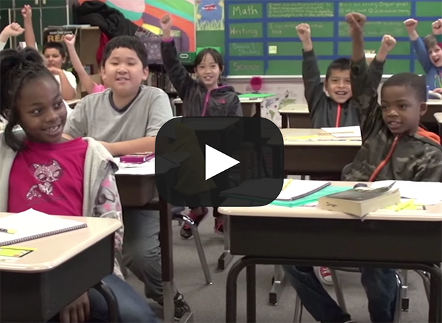

Featured Video
Students at Manitou Park Elementary know what it means to be a Bulldog! Watch the first video in a series called “Whole Child, Whole Solution” to see an example of how this school addresses social emotional learning. Students are learning skills like self management, self awareness, social awareness, relationship skills and responsible decision making. These skills are valued just as much as academic skills and, as a result, students and staff are growing together and fostering a culture that is built on being safe, responsible and respectful. Watch the Video

CityLine TV Tacoma
Check us out on CityLine TV Tacoma! Greg Benner, Jennifer Kubista, and Lyle Quasim share the importance of The Tacoma Whole Child Initiative and the movement that is taking our city by storm—and changing lives! Watch the Video

2015 Building a Grad Nation Report Launch
In 2007 a researcher labeled all Tacoma comprehensive high schools as “dropout factories”. Watch as these same experts refer to Tacoma now as part of the “West Coast Dream Team” as a result of their focus on social emotional learning, trauma-informed care, and a significant increase in graduation rates. Watch the Video
Slideshow photos courtesy of Tacoma Public Schools.


{kind=link}
{kind=link}
{kind=link}